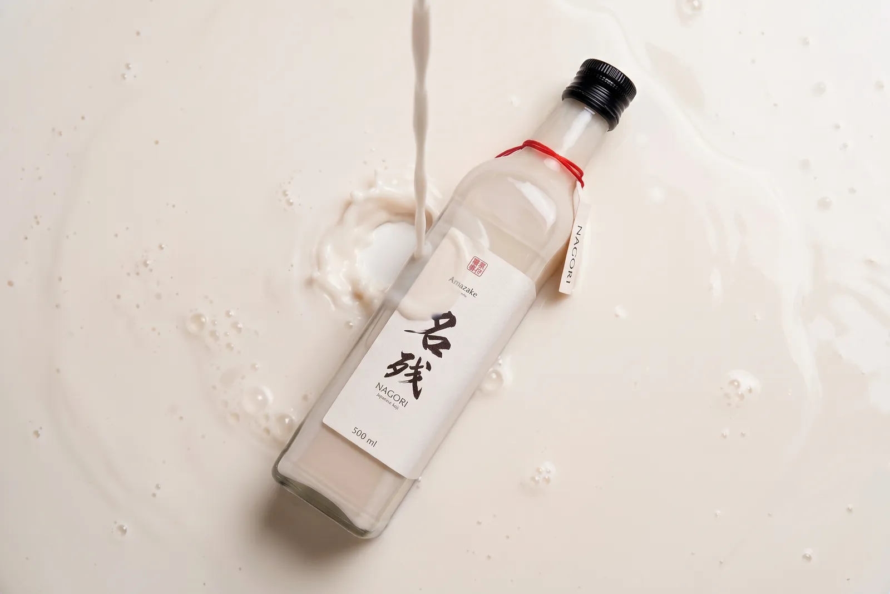
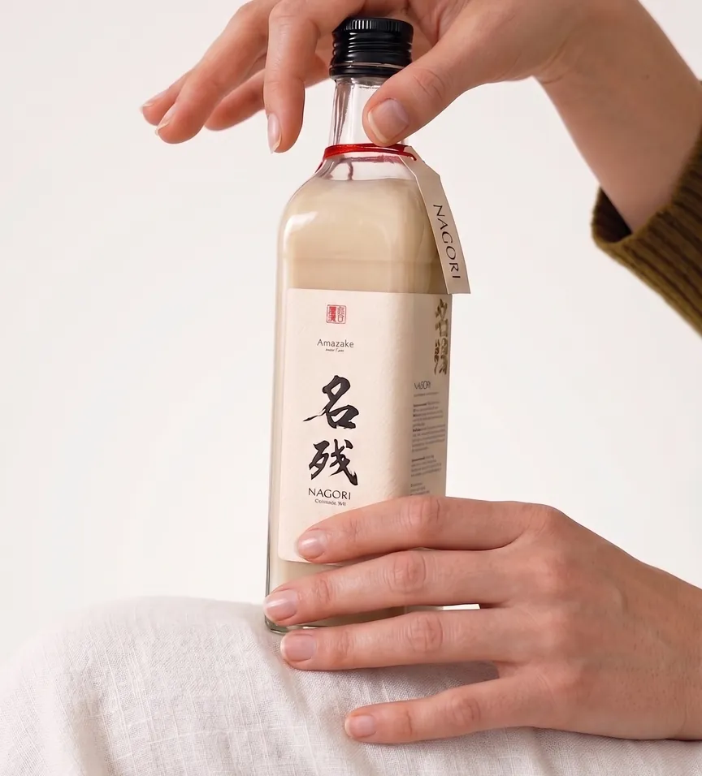
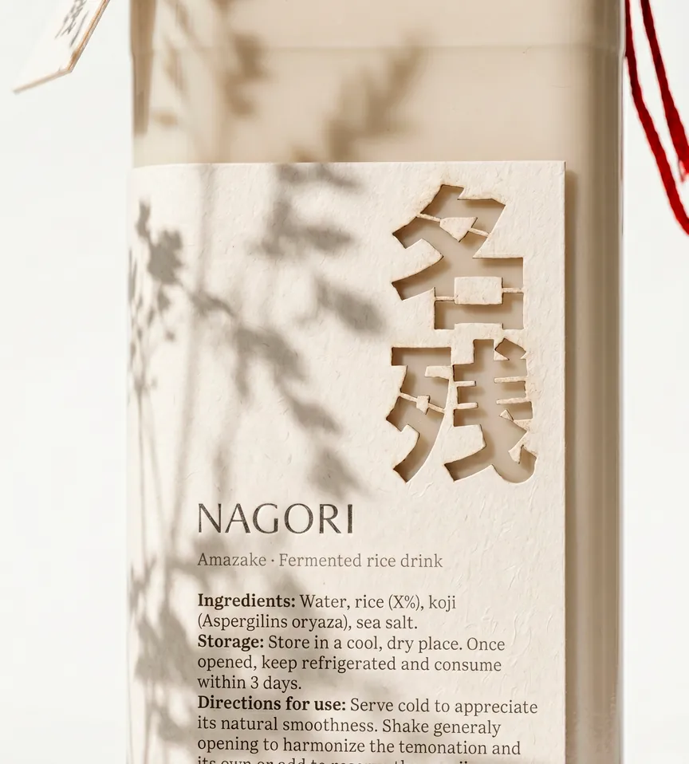
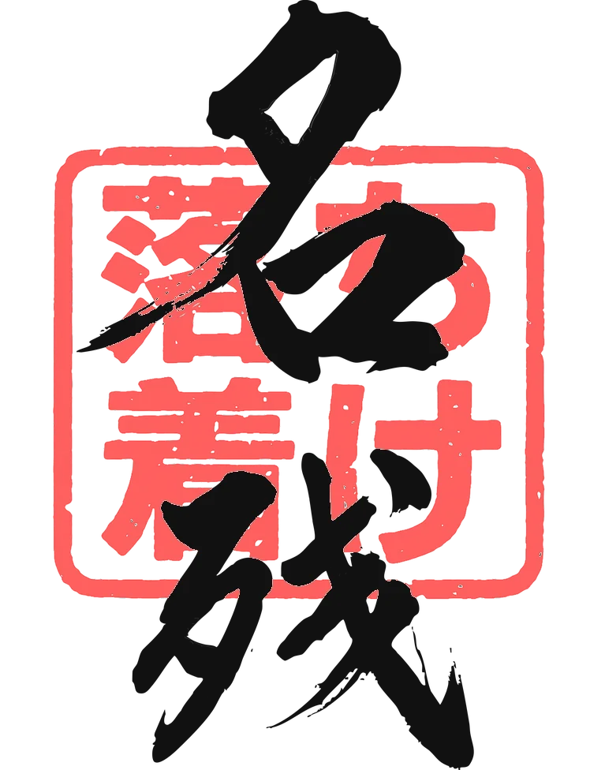
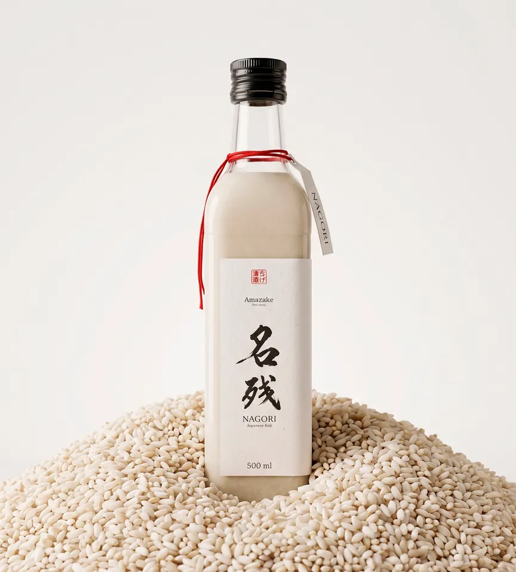
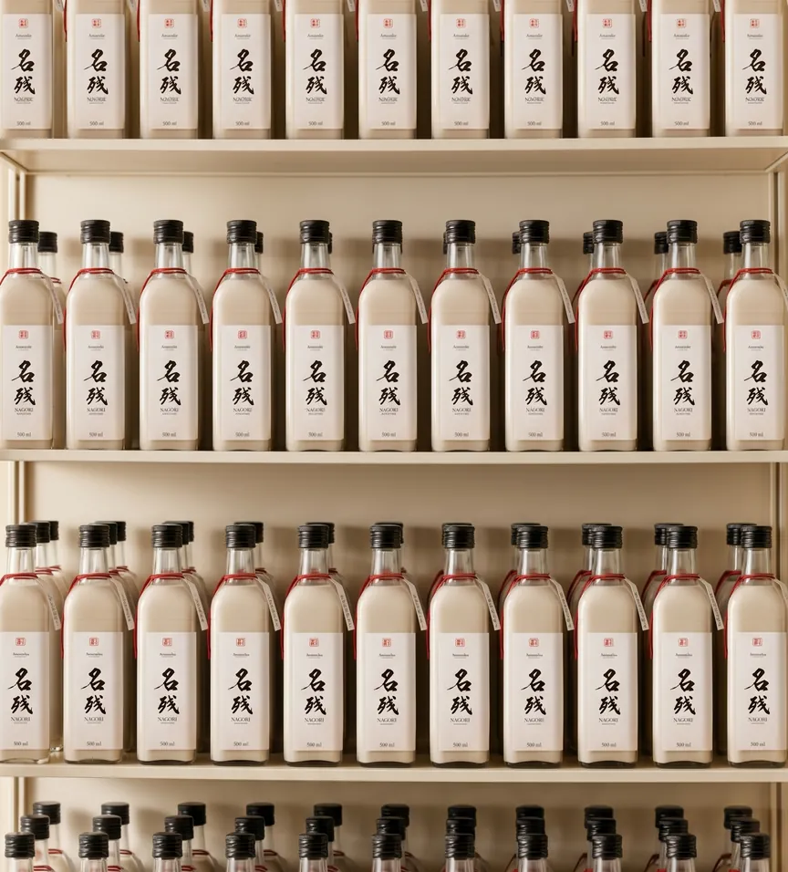

Nagori
Vitalidad contenida
Nagori es una leche de arroz inspirada en el amazake japonés, elaborada por fermentación natural para conservar la esencia viva del grano. El proyecto parte de esa transformación lenta, casi invisible: el arroz convirtiéndose en silencio en algo blanco, vivo y luminoso.
El concepto, vitalidad contenida, mira a la energía que permanece bajo la superficie esperando el momento de mostrarse. A partir de Byung-Chul Han, la marca propone además una presencia lenta: otra idea de felicidad en una época de velocidad y rendimiento, la que nace de existir sin prisa y dejar que el tiempo haga su trabajo. Nagori no va de productividad ni de bienestar forzado, sino de contemplación, con el tiempo tratado como un ingrediente más.
La personalidad de marca combina dos arquetipos. El Inocente aporta calma, pureza y gratitud; el Explorador añade una curiosidad suave por el origen, la materia y el proceso. Juntos dan una marca serenamente inquieta, que explora la quietud como si fuera terreno nuevo. Construida sobre cinco palabras (fermentación, silencio, tiempo, forma y presencia), cada botella está pensada como una pieza de diseño líquido: sencilla por fuera, compleja por dentro.






Cuéntame
tu proyecto.
chavescerrejon@gmail.com
[ Contáctame ]
Escríbeme sin compromiso
y hablamos de tu proyecto.
Lo dejaremos más afilado.